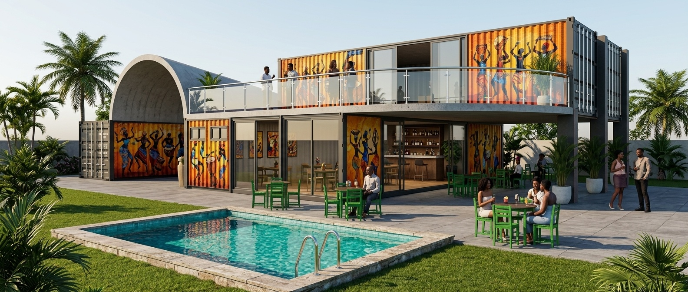
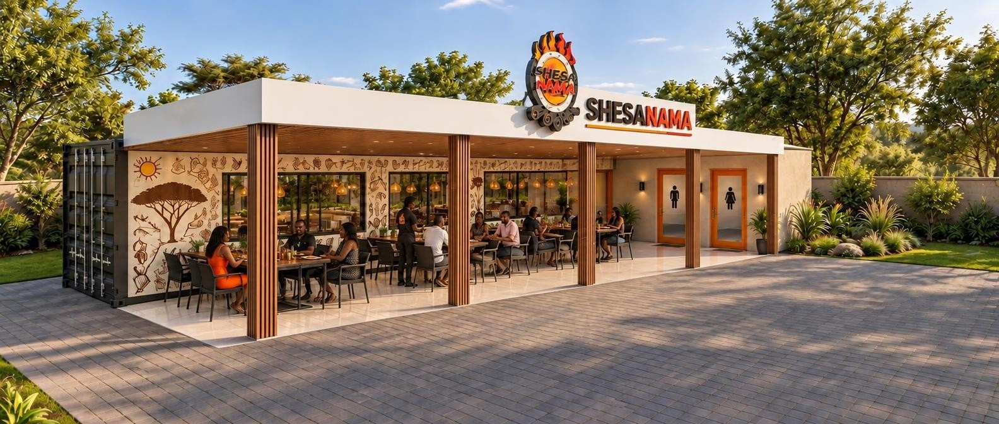

Wellness
WellnessRustenburg Gym
A multi-level gym concept with a glazed training floor, rooftop activity deck and a prominent exterior.
Enquire about a gym buildWellnessA multi-level gym concept with a glazed training floor, rooftop activity deck and a prominent exterior.
Enquire about a gym build
 Food & retail
Food & retailA bright takeaway and retail layout with serving windows, canopy cover and space for customer seating.
Enquire about a tuck shop
 Healthcare
HealthcareA clinic concept with a sheltered entry and clear separation between reception and consultation spaces.
Enquire about a clinic

CoolingA cold-storage brief can be scoped around product type, capacity, temperature range and loading access.
Enquire about a chiller
 Food & retail
Food & retailA compact food outlet concept with a customer-facing service counter and an efficient work area.
Enquire about a kota outlet
Food & hospitalityA hospitality concept pairing a container kitchen and dining area with space for outdoor customers.
Enquire about a shisa nyama
 Food & hospitality
Food & hospitalityA multi-level restaurant concept with sheltered dining, an upper deck and a distinctive visual identity.
Enquire about a restaurantSome portfolio images are design visualisations. Final layouts, equipment and specifications are confirmed for each project.
Tell us what you need and we’ll help shape the project brief.